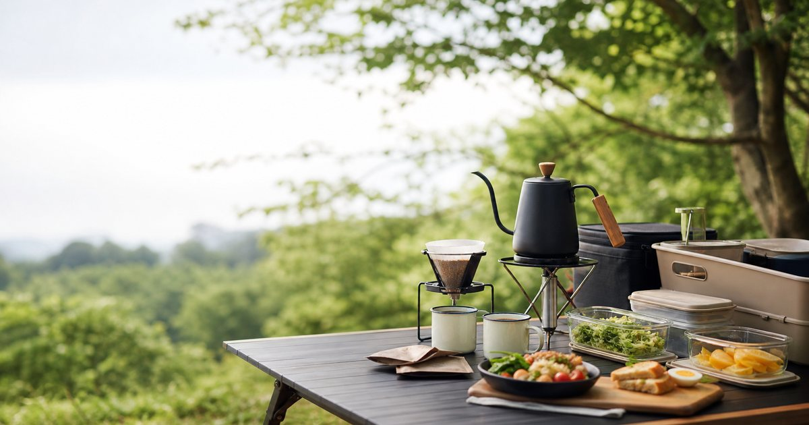

露營咖啡與戶外餐食：從手沖壺、濾掛咖啡到冷凍食材的準備法
露營餐食不一定要變成一場大型廚房工程。先把熱水、咖啡、主食與收納順序安排好，從手沖壺、濾掛咖啡到冷凍食材，都能讓戶外餐桌更穩定。

先決定你的戶外餐桌要解決什麼問題
很多人第一次準備露營餐食時，會從菜單開始列：牛排、火鍋、烤肉、咖啡、甜點，看起來很完整，真正到現場卻發現桌面太小、器具太多、垃圾太散，最後每個人都在找剪刀、濕紙巾和熱水。
比較好的開始，是先把餐桌任務分成三層：醒腦的飲品、能快速完成的主食，以及讓收納不失控的小工具。BINCOO 這類咖啡器具適合放在飲品層，Xinto Coffee、馬克老爹與 LEOBUNA 適合處理豆子、濾掛與風味選擇；田食原、小嚼士、呷什麵則可以讓餐食不必每次都從零備料。
- 一日野餐：先準備濾掛、熱水、簡單主食與保冷袋。
- 過夜露營：再加入手沖器具、冷凍食材、調理包與收納籃。
- 多人聚會：把飲品區、料理區、餐具區分開。
咖啡器具先求穩定，不急著追求儀式全套
戶外咖啡最容易讓人失手，因為器具越看越迷人：手沖壺、磨豆機、濾杯、杯具、收納盒，每一樣都像能讓營地立刻升級。但如果你的水源、桌面與火源還不穩，完整手沖流程反而會讓早晨變得手忙腳亂。
BINCOO 的手沖壺、鈦壺與注水器具，適合已經確認自己會在戶外固定煮水、沖咖啡的人。剛入門可以先從濾掛或掛耳開始，等你確定常在哪種桌面、用哪種爐具、幾個人一起喝，再決定是否升級器具。
- 先用濾掛確認飲用頻率，再升級手沖壺。
- 器具要能穩定站在桌面上，不只看外觀。
- 杯具、濾紙、咖啡渣都要有固定收納位置。
咖啡豆、濾掛與掛耳包要看情境，不只看風味詞
Xinto Coffee、馬克老爹與 LEOBUNA 都適合放進戶外咖啡清單，但角色不同。咖啡豆適合有磨豆與沖煮習慣的人；濾掛和掛耳包則更適合一日野餐、車宿或不想帶太多器具的行程。
風味描述可以作為選擇參考，但戶外場景更需要看便利性、份量和保存方式。若你一早要收帳、整理車廂、準備早餐，能在三分鐘內完成的一杯咖啡，常常比複雜器材更實用。
- 濾掛適合短程、多人分杯與不想清洗器具的日子。
- 咖啡豆適合有固定沖煮流程、願意整理咖啡渣的人。
- 禮盒或混合包適合多人同行，能讓不同口味自然分流。
冷凍食材與調理包，是讓餐食不失控的保險
戶外餐食不需要每一餐都像餐廳。田食原的冰烤地瓜、舒肥雞胸、冷凍蔬菜，小嚼士的冷凍食品與生鮮食材，適合用來降低備料壓力；呷什麵這類拌麵或乾拌主食，則適合當作快速補位。
重點是不要把冷凍食材想成偷懶，而是把風險前移。你在家中先處理份量、保冷與搭配，到營地只需要加熱、擺盤、搭配蔬菜或湯品，整體節奏會安定很多。
- 冷凍食材要依保冷時間與交通方式選，不要超出安全保存條件。
- 主食、蛋白質、蔬菜分袋放，比全部混在一起更好調整。
- 料理包適合備用，不必每餐都用。
餐桌收納決定你會不會想再露營一次
一頓戶外餐吃得開心，收得狼狽，也會讓下一次出門的意願下降。咖啡器具、調味料、紙巾、垃圾袋、濕抹布與未開封食材，都要有位置；沒有位置的東西，最後一定會堆在桌上。
建議把餐桌拆成飲品箱、食材箱、即取小物袋。飲品箱放咖啡、濾掛、杯具；食材箱放保冷袋、主食與調理包；小物袋放剪刀、夾子、紙巾、垃圾袋和打火機。這比買更多漂亮盤子更能提升使用感。
- 咖啡器具和食材分開，不讓咖啡渣污染食材袋。
- 濕物與垃圾要有獨立袋，不要等收營才找。
- 每次回家刪掉沒有用到的器具，下一次會更輕鬆。
讓主食、咖啡與甜點各有一個角色就好
戶外餐桌要有記憶點，不一定要有很多菜。最穩的配置，是一個能吃飽的主食、一杯品質穩定的飲品，再加一個簡單甜點或水果。這樣既不單薄，也不會讓準備工作壓垮整趟行程。
如果你喜歡儀式感，可以把預算放在咖啡與杯具；如果你更重視省事，就把預算放在冷凍主食與保冷。兩種都沒有高低，只是回到你希望露營像一場慢生活，還是一段不狼狽的戶外休息。
- 先建立固定菜單，再慢慢加入新器具。
- 多人同行時，讓每個人負責一個模組，不要全靠同一個人備料。
FAQ
露營咖啡一定要帶手沖壺嗎？
不一定。短程或第一次出門可以先用濾掛、掛耳包或即沖方案，等你確認會固定在戶外煮水與整理器具，再考慮手沖壺、濾杯與磨豆設備。
冷凍食材適合露營嗎？
適合，但要看交通時間、保冷條件與食品保存方式。冷凍食材可以降低備料壓力，但不能忽略保冷、加熱與食安；所有食材仍應依商品頁與包裝標示處理。
戶外餐食最先該買器具還是食材？
先看你的行程型態。一日野餐可以先買濾掛、簡單主食和保冷袋；過夜露營再補手沖壺、鍋具與收納箱。不要一開始就買滿完整廚房。
下一步建議
如果你想讓戶外餐桌更穩，先從咖啡、主食與收納三件事開始，不需要一次買齊所有器具。
重要警語
本文為一般選購與生活情境整理，不構成醫療、專業戶外訓練或安全保證。戶外活動請依天候、路線、個人體能與現場規範評估；涉及食材、雨具、護具、車用或睡眠用品，實際規格、價格、活動與庫存請以商品頁公告為準。
本文含品牌／商品導購連結；若你透過部分商品連結前往選購，Elite Fashion 可能取得合作收益。本文仍以編輯判斷與使用情境整理為主，價格、規格、活動與庫存請以商品頁公告為準。